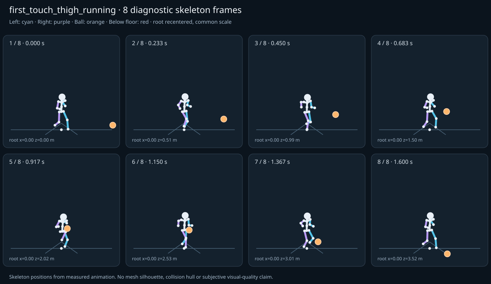

מה הוריד את הציון
- קפיצות פוזה: RightFoot בזמן 0.7833 ש׳; קפיצת סיבוב שקולה 19.8678 מעלות ב־60Hz (צהוב)
- כניסה ויציאה מול המתנה: פער ב־יציאה מול המתנה; יחס חריגה 2.1984 (צהוב)
כיסוי: 100%. לא כל מדד חל על כל קליפ; הסטטוס והראיות מפורטים למטה.
שמונה פריימים
תצוגת שלד אבחונית שנבנתה מהפריימים הנמדדים. צד שמאל בכחול, ימין בסגול, כדור בכתום. מיקום השורש ממורכז לצפייה; מיקומו בעולם כתוב בכל פריים.

המדדים והראיות
| מדד | מצב | ערך | ציון | סף ופרטי מדידה |
|---|---|---|---|---|
| החלקת רגליים | ירוק | 0.004 height ratio | 92 | {
"definition": {
"label": "החלקת רגליים",
"unit": "height ratio",
"green": 0.01,
"yellow": 0.035,
"weight": 18,
"description": "Maximum horizontal sole displacement from the first sample of each declared support window, divided by character height. Inferred support is used only when no windows were supplied."
},
"value": 0.004059,
"status": "green",
"score": 91.88,
"evidence": {
"coordinateSpace": "authored reference world (simulation-owned)",
"supportSource": "declared",
"windows": 4,
"samples": 80,
"maxDriftMeters": 0.00686,
"p95SpeedMetersPerSecond": 0.024901,
"worst": {
"bone": "RightFoot",
"t": 0.704,
"start": 0.4,
"end": 0.704,
"driftMeters": 0.00686
}
}
} |
| חדירה לרצפה | ירוק | 0.001 height ratio | 94 | {
"definition": {
"label": "חדירה לרצפה",
"unit": "height ratio",
"green": 0.005,
"yellow": 0.02,
"weight": 15,
"description": "Maximum depth of the supplied sole probe points and all skeletal joint centers below the declared floor plane, divided by height. Sole probes are not a mesh collision audit."
},
"value": 0.001398,
"status": "green",
"score": 94.41,
"evidence": {
"samples": 2020,
"floorY": 0,
"probeKind": "declared sole probes plus skeletal joint centers (no mesh surfaces)",
"maxDepthMeters": 0.002363,
"worst": {
"t": 1.216667,
"bone": "RightFoot",
"depthMeters": 0.002363,
"y": -0.002363
}
}
} |
| קפיצות פוזה | צהוב | 2.098 discontinuity ratio | 58 | {
"definition": {
"label": "קפיצות פוזה",
"unit": "discontinuity ratio",
"green": 1,
"yellow": 2.5,
"weight": 18,
"description": "Maximum adjacent 60 Hz-equivalent step: root-relative marker displacement / 0.04 height, root-relative rotation / 15 degrees, or root translation / 0.08 height. A fast continuous action can also exceed this screening threshold."
},
"value": 2.097752,
"status": "yellow",
"score": 58.04,
"evidence": {
"adjacentPairs": 100,
"observations": 1700,
"maxDegrees60Hz": 19.867761,
"maxMarkerStepHeight60Hz": 0.08391,
"maxRootStepHeight60Hz": 0.021696,
"worst": {
"ratio": 2.0977517922778812,
"t": 0.783333,
"previousTime": 0.766667,
"bone": "RightFoot",
"markerStepHeight60Hz": 0.08391,
"degrees60Hz": 3.105077
}
}
} |
| חריגות אנטומיות | ירוק | 0 % affected frames | 100 | {
"definition": {
"label": "חריגות אנטומיות",
"unit": "% affected frames",
"green": 0.5,
"yellow": 3,
"weight": 14,
"description": "Percentage of frames with elbow or knee flexion above 165 degrees, neck bend above 80 degrees, or a segment length changing by more than 5%. Optional calibrated hinge checks detect reverse knee flexion above 8 degrees. Conservative marker limits do not diagnose axial joint twist."
},
"value": 0,
"status": "green",
"score": 100,
"evidence": {
"testedFrames": 101,
"affectedFrames": 0,
"checks": 1717,
"maxLimbFlexionDegrees": 145.207388,
"maxRelativeSegmentLengthChange": 0,
"hingeDirectionChecked": true,
"axialTwistChecked": false,
"violations": []
}
} |
| מגע בכדור | ירוק | 0 height ratio | 100 | {
"definition": {
"label": "מגע בכדור",
"unit": "height ratio",
"green": 0.015,
"yellow": 0.05,
"weight": 13,
"description": "Maximum absolute distance from the ball surface to the sampled, bone-transformed declared contact point, divided by height. Events are evaluated at their exact declared times by interpolation."
},
"value": 0,
"status": "green",
"score": 100,
"evidence": {
"radiusMeters": 0.11,
"samples": 2,
"missed": [],
"contacts": [
{
"t": 0.9,
"bone": "RightUpLeg",
"gapMeters": 0,
"signedGapMeters": 0,
"centerDistanceMeters": 0.11,
"contactPoint": [
0.020159,
0.791376,
2.284763
],
"ballCenter": [
0.104771,
0.861408,
2.290786
],
"declaredLocalPoint": true
},
{
"t": 1.066667,
"bone": "RightUpLeg",
"gapMeters": 0,
"signedGapMeters": 0,
"centerDistanceMeters": 0.11,
"contactPoint": [
-0.065803,
0.814451,
2.588025
],
"ballCenter": [
-0.062792,
0.885212,
2.67219
],
"declaredLocalPoint": true
}
],
"contactDetailsTruncated": false,
"coordinateSpace": "authored reference world (simulation-owned)"
}
} |
| כניסה ויציאה מול המתנה | צהוב | 2.198 continuity ratio | 62 | {
"definition": {
"label": "כניסה ויציאה מול המתנה",
"unit": "continuity ratio",
"green": 1,
"yellow": 3,
"weight": 10,
"description": "Worst entry/exit mismatch to the best matching idle phase: RMS marker error / 0.04 height, RMS bone rotation / 25 degrees, or RMS endpoint velocity error / 0.75 height per second. Horizontal root translation is aligned; root height and body pose remain measurable."
},
"value": 2.198424,
"status": "yellow",
"score": 62.02,
"evidence": {
"entry": {
"ratio": 2.1984234741152733,
"t": 0,
"idleTime": 1.8,
"markers": 17,
"rmsPositionHeight": 0.087937,
"rmsRotationDegrees": 28.289809,
"rmsVelocityHeightPerSecond": 0.538163,
"velocityEvaluated": true
},
"exit": {
"ratio": 2.1984235468179154,
"t": 1.6,
"idleTime": 1.8,
"markers": 17,
"rmsPositionHeight": 0.087937,
"rmsRotationDegrees": 28.289809,
"rmsVelocityHeightPerSecond": 0.418982,
"velocityEvaluated": true
},
"worstEndpoint": "exit",
"alignment": "horizontal root translation; raw asset poses used when provided"
}
} |
| מהירות גוף מול צעדים | ירוק | 0.006 relative speed error | 99 | {
"definition": {
"label": "מהירות גוף מול צעדים",
"unit": "relative speed error",
"green": 0.2,
"yellow": 0.5,
"weight": 8,
"description": "Relative difference between average root travel speed and the median backward support-foot sweep speed relative to the root. Cadence and implied stride lengths are also reported. In-place clips need an explicit reference travel scenario; stationary actions are not scored as locomotion."
},
"value": 0.005854,
"status": "green",
"score": 99.41,
"evidence": {
"rootSource": "sampled presented root",
"rootSpeedMetersPerSecond": 2.2,
"observedRootSpeedMetersPerSecond": 2.2,
"referenceRootSpeedMetersPerSecond": 2.2,
"supportSource": "declared",
"backwardSweepSpeedMetersPerSecond": 2.187121,
"cadenceStepsPerSecond": 2.5,
"impliedStrideMeters": 1.749697,
"rootStrideMeters": 1.76,
"supportSweeps": [
{
"bone": "LeftFoot",
"start": 0,
"end": 0.304,
"duration": 0.304,
"sweepMeters": 0.664885,
"speedMetersPerSecond": 2.187121
},
{
"bone": "RightFoot",
"start": 0.4,
"end": 0.704,
"duration": 0.304,
"sweepMeters": 0.661944,
"speedMetersPerSecond": 2.177449
},
{
"bone": "LeftFoot",
"start": 0.8,
"end": 1.104,
"duration": 0.304,
"sweepMeters": 0.664877,
"speedMetersPerSecond": 2.187095
},
{
"bone": "RightFoot",
"start": 1.2,
"end": 1.504,
"duration": 0.304,
"sweepMeters": 0.664885,
"speedMetersPerSecond": 2.187121
}
]
}
} |
| סימטריה | ירוק | 0 relative mismatch | 100 | {
"definition": {
"label": "סימטריה",
"unit": "relative mismatch",
"green": 0.03,
"yellow": 0.1,
"weight": 4,
"description": "Maximum bilateral segment-length mismatch. Looping locomotion additionally compares reflected half-cycle leg markers; explicit pose symmetry compares simultaneous bilateral markers. One-sided actions retain unscored motion diagnostics, so a valid kick or dribble arm is not penalized for intentional asymmetry."
},
"value": 0,
"status": "green",
"score": 100,
"evidence": {
"mode": "structural",
"modeSource": "structural default for intentional asymmetry",
"structuralMismatch": 0,
"segments": [
{
"segment": "Arm-ForeArm",
"mismatch": 0
},
{
"segment": "ForeArm-Hand",
"mismatch": 0
},
{
"segment": "UpLeg-Leg",
"mismatch": 0
},
{
"segment": "Leg-Foot",
"mismatch": 0
}
],
"motionRmsHeight": null,
"worstMotion": null,
"bilateralPoseRmsHeightUnscored": 0.165974,
"note": "One-sided authored actions are checked for structural symmetry only."
}
} |